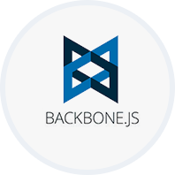
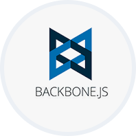

Matt Gukowsky | Software and Web Developer
About Me
Hi!
I'm a newly minted programmer looking for a challenge.
I enjoy building projects in
I have played video games for as long as I can remember, and as a teenager I started experimenting with modding tools. What started as an interest grew into a hobby and finally into a career. I think of development like beating a game: just like there is always a new level to beat or record to break, there is always a more efficient algorithm waiting to be discovered!
I know about:


 



Some other tidbits about me:
- -
TDD is my workflow; nothing makes my day like getting an integration suite to pass! - - I am most comfortable designing with
MVC andREST architecture in mind. I usually start withCRUD actions and work my way up from there. - - Most recently I have been working with
Angular and server-sideNode.js , as well asC++ with the WIN32 API. - - I enjoy working with
AI , to which I apply my psychology background, and digital audio, which I studied in college.
Projects
NEScript (Live) | GitHub
JavaScript
- Modular construction allows 'components' to be swapped in and out.
- Mimics subtle hardware behaviors of the original NES.
- Full
- There's a lot to say about this project; check out the readme!
cREST (Download) | GitHub

Multithreaded
- Requests and responses are handled via specially constructed
- User can input custom HTTP requests.
Browser Synth (Live) | GitHub
Digital audio synthesizer implemented in the browser.
- Utilizes
- Waveforms are generated by their corresponding functions and written to an audio buffer.
- Works in most updated browsers except Internet Explorer
CSBS (Live) | GitHub
A flashcard app modeled after Brainscape.
- A
- Algorithm implemented in Backbone.js causes more challenging flashcards to appear more frequently.
- Sharing, rating, and public/private functionality for flashcard decks.
Centipede (Live) | GitHub
Browser version of the classic Atari game.
- Responsive CSS effects which can be toggled on and off.
- Utilizes a hash to efficiently track all game objects, allowing for quick collision detection and garbage collection.
- Enemies move faster as level increases.
Chat App (Live) | GitHub
-
- After being served once, assets are cached server-side to allow for quick delivery.
RailsLite | GitHub
Web server which recreates Rails back-end functionality.
- New routes defined through dynamic programming.
- User-defined